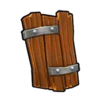

Escudo de madeira
Escudo · Tier 1 · Nível 2
Pode ou não ser uma porta quebrada reaproveitada.
Atributos
Defesa
12
Economia
Valor
110
Tempo de fabricação
30s
XP do comerciante
250
Trabalhadores: Carpinteiro 1
Receita

Madeira
× 7
Marcos do projeto
8
Desbloqueia projeto: Broquel pesado
20
Valor +50%
36
-1 Madeira
55
Chance de qualidade +1
85
Chance de qualidade +2